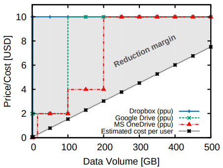

For current cloud deduplication system, user does not directly benefit from the storage reducation.
As there is no transparent relation between effective storage costs and the prices offered to the users.
the cloud storage service providers charge their customers based on the amount of data that they store - irrespective of the level of data deduplication exhibited by their data.
This paper proposes ClearBox, which enables cloud users to verify the effective storage space that their data is occupying in the cloud, and consequently to check whether they qualify for benefit such as price reductions.
relay on gateway to orchestrate cross-user file-based deduplication
provide its users with full transparency on the storage savings exhibited by their users.
Cost reducation estimation
There is considerable room for price reductions for those users whose data undergoes considerable deduplication

ClearBox
Why it needs the additional gateway
If using a decentralized scheme, it requires interaction among users, and is unlikely to scale as the number of users storing the same data increases.
thus, it argues the gateway is a logically centralized entity. (orchestrate cross-user-file-based deduplication)
System model
Time is divided into epochs of equal length. Clients receive from a list of their files and deduplication pattern at the end of every epoch.
deduplication pattern of a given file: the number of users that store the same deduplicated file in the cloud.
Attest Protocol
This operation is executed by the gateway only, it generates a proof of cardinality of a given file ID and an epoch that attests an upper bound for the number of clients registered to this file within this epoch.
Verify Protocol
customers can verify the proof generated by protocol to verify the upper bound on the total number of file users.
Security model
Maliciou users
Rational gateway: the gateway and the storage provider will only deviate from the protocol if such a strategy increases their profit in the system
This paper argues that the achievable security in its case is therefore that of MLE schemes.
guarantees privacy under chosen distribution attacks.
System design
A novel Merkle-tree based cryptographich accumulator which is maintained by the gateway.
accumulate the IDs of the users registered to the same file within the same time epoch.
encode the upper bound on the number of accumulated value, and enable any legitimate client associated to the accumulator to verify this bound.
Oblivious server-aided key generation protocol
against brute force search attacks
ensures a curious gateway/storage provider cannot acquire the necessary keys to decrypt the file.
sends the bliended hash to the gateway
Time-Dependent Randomness
Ensure the selection of files to which the gateway attests the deduplication pattern is randomly chosen and not precomputed.
Base on bitcoin
Implementation and Evaluation
Implementation
Java, JPBC library, BLS signatures
Amazon S3 and Dropbox
Gateway: it spawns multiple threads on 's machine, each thread corresponding to a unique worker handling requests/bills of a given client.
Store the metadata in local MySQL database.
Evaluation
Setting: NetEM to shape all traffic exchanged on the networking interfaces.
Compared with DupLESS:
key generation overhead (latency)
Proof verification overhead
GET, PUT latency
2. Strength (Contributions of the paper)
This paper proposes a novel cloud storage scheme based on a cryptographich tree-based accumulator to attest in logarithmic time the deduplication patterns of every file stored in the cloud.
For security analysis, this paper shows it can resist against malicious clients and a curious storage provider.
3. Weakness (Limitations of the paper)
this paper is not easy to fully understand.
In this work, it cannot hide the konwledge of file sizes and user access pattern
4. Future Works
This paper mentions a concept, called cardinality-proving accumulator which leverages Merkle tree in order to efficiently provide proofs of membership and (non-public) proofs of maximum set cardinality.
This paper mentions for the key generation process, the BLS signature is faster than RSA signature in DupLESS to compute by the key server. But BLS signature is more expensive to verify by clients
this paper argues the client effort is dominated by hashing the file.